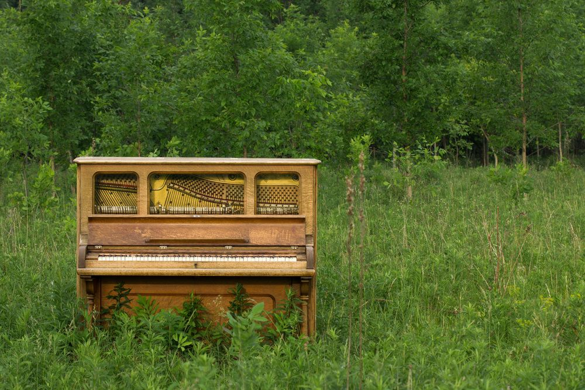
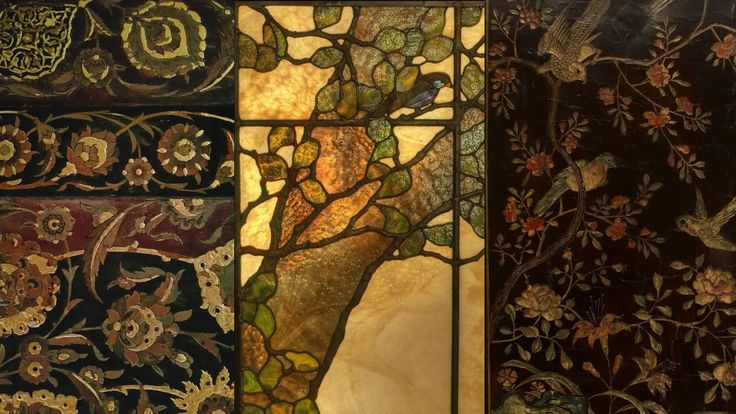
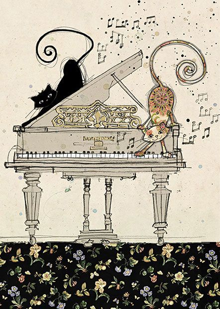
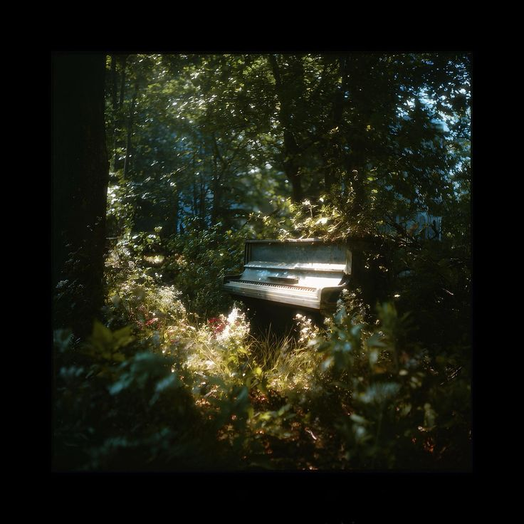

Powrót





Na pianinie gram od końca Stycznia 2025 roku. Zaczałem grać po części z nudów podczas ferii, jak i z uwagi na to, że mi to imponowało i chciałem nauczyć się grać na jakimś instrumencie, a z czasem się wciągnąłem. Aktualnie gram na pianinie cyfrowym Roland FP-10, ale pewnego dnia chciałbym mieć prawdziwe, drewniane pianino akustyczne. Moim wymarzonym utworem do nauczenia się jest Ballada no.1 op.23 Fryderyka Chopina. W najbliższym czasie zamierzam uczyć się Clair de Lune Debussiego, i Nokturn op.27 no.2 F.Chopina.
Aktualnie pracuję nad Nokturnem F-moll op.55 no.1, aktualny progres:
Filmik z 1 Kwietnia 2026
Nokturn cis-moll no.20 posth.
Filmik z 1 Kwietnia 2026
Waltz a-moll
Filmik z 1 kwietnia 2026
Preludium E. Op.24 no.4
Filmik z x 2026